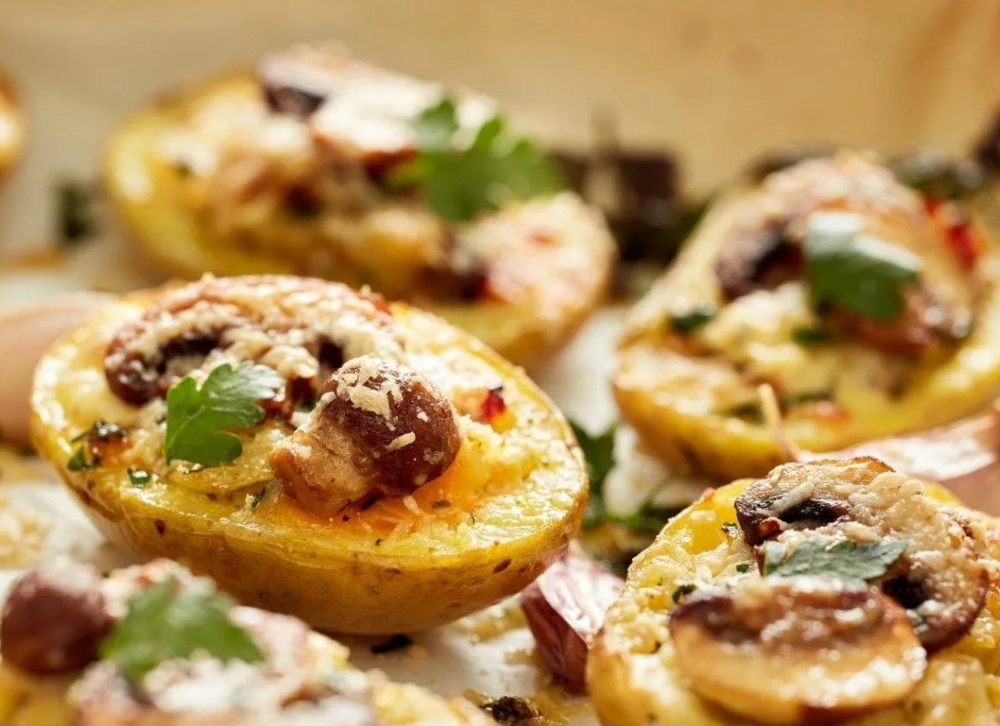
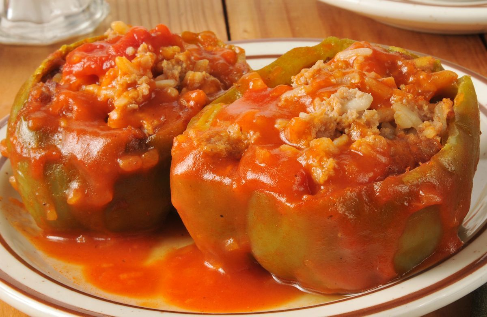
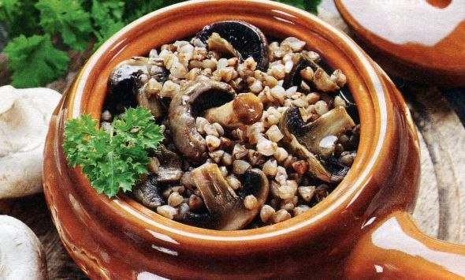
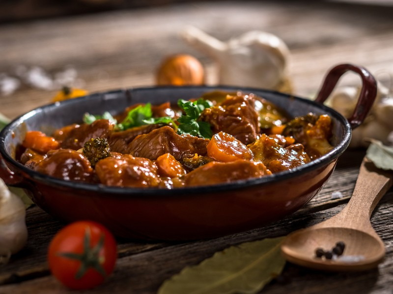

| Название блюда | Оценка от 0 до 10 | Ссылка на рецепт | Фото блюда |
|---|---|---|---|
| Запечённый картофель с чесноком, фаршированный грибами | 8 | Ссылка |  |
| Фаршированные перцы в итальянском стиле | 9 | Ссылка |  |
| Гречка с курицей и грибами в горшочках | 10 | Ссылка |  |
| Азу из баранины | 2 | Ссылка |  |
| Картофельная запеканка с фрикадельками | 5 | Ссылка | |
| Плов из говядины с нутом | 6 | Ссылка | |